A backyard staring back with blank potential doesn't need a landscape architect or a shipment of imported Italian pavers to become something real. Most of the time, the right pergola and a little creativity gets you most of the way there.
Pergolas aren't just fancy wood frames sitting in someone else's garden, either. Done right, they give a backyard actual structure, add shade exactly where it's needed, and turn a vague "we should use the backyard more" into somewhere people genuinely want to be.


14 Pergola Ideas Worth Building
Add a Living Green Roof
This one's for the plant lovers out there. A green roof is basically nature's crown for a pergola, and it does more than just look good sitting on top.
Use lightweight succulents, moss, or drought-tolerant grasses, and keep the top flat or gently sloped so soil and drainage actually hold in place. Beyond the visual payoff, a green roof genuinely helps insulate and reduce heat underneath it.
A white pergola topped with a full planted roof beside a small pond, like the one shown here, is environmentally conscious and striking enough to stop anyone walking by.
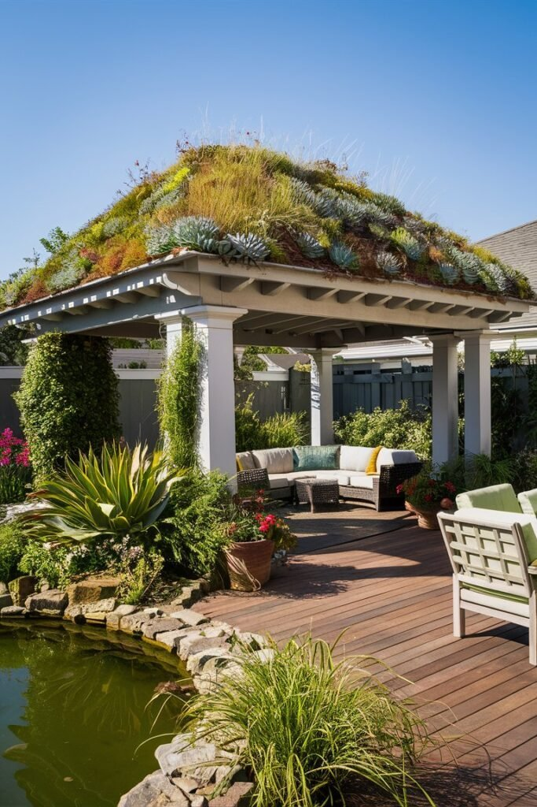
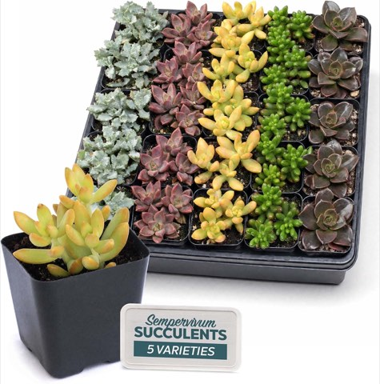
Mountain Crest Gardens Live Succulent Plant Assortment, 25 Mini Potted Succulents
Shop on AmazonDrape It in Outdoor Curtains
Want instant drama, the good kind? Flowing outdoor curtains on a pergola completely transform the whole vibe of the space in minutes.
Sheer white panels billowing in the breeze lean romantic. Heavier linen or outdoor blackout curtains add real privacy instead. Either way, curtains also block wind and nosy neighbors, which are equally annoying to deal with.
A pergola wrapped in soft ivory drapes around a rattan seating area, like the one shown here, reads as spa retreat meets open-air cabana, genuinely hard to argue with.
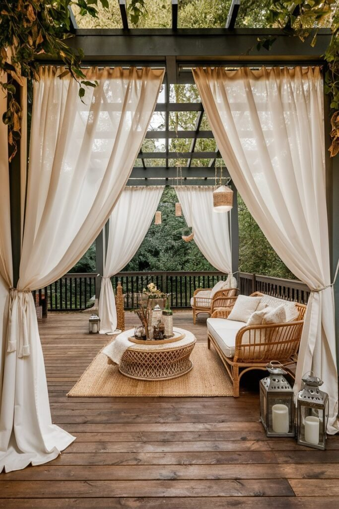
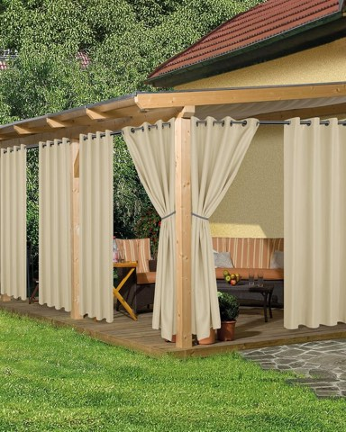
HolidayIdeas Waterproof Outdoor Curtains for Patio, 54 x 84 Inch, Cream, 6 Pack
Shop on AmazonBuild In a Bench
This one's a genuine lifesaver for smaller yards. A pergola with a built-in bench gives both seating and structure without wasting a single extra foot of space.
Customize the shape freely, a wraparound corner bench works beautifully here, and add weatherproof cushions and throw pillows on top. The bench base can double as bonus storage too, because there's always a need for more of that.
A rose-covered wood structure wrapping a cushioned corner bench, like the one shown here strung with fairy lights, delivers genuine seating and genuine charm from a fairly compact footprint.
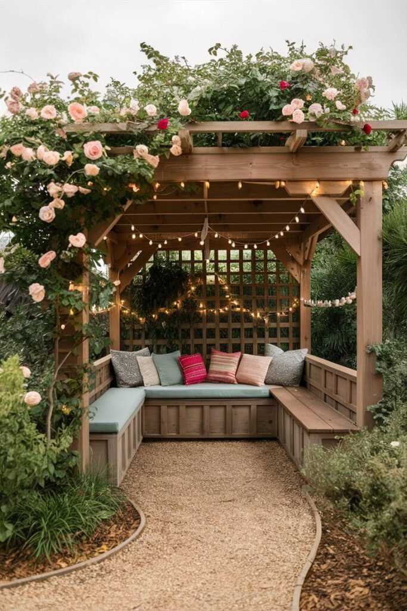
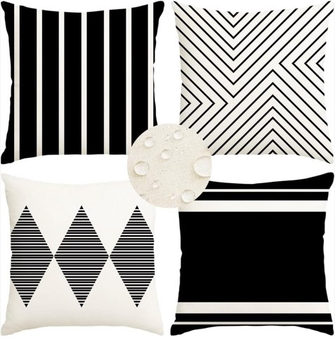
Waterproof Outdoor Pillow Covers, 18 x 18 Inch, Black and Beige, Set of 4
Shop on AmazonAdd a Retractable Canopy
Some days call for full sun, other days just don't. A pergola with a retractable canopy gives genuine weather control, pull it open for sunlight, close it the second a surprise summer drizzle hits.
Water-resistant canvas or UV-blocking fabric are the materials to actually look for here. The whole setup functions like outdoor air conditioning, minus the actual AC unit.
A sand-toned retractable awning shading a full lounge seating area, like the one shown here, proves how much comfort a little mechanical flexibility can add to an otherwise simple structure.
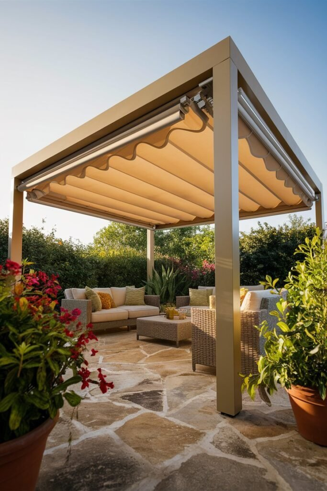

Hang a Hammock
Sometimes the simplest move really is the right one: a hammock under a pergola might be the coziest backyard addition on this entire list.
A macrame or woven canvas hammock earns extra boho points right away. Add a side table for a drink or a book, and if full-cocoon napping is the actual goal, shade curtains seal the deal completely.
A colorful woven hammock strung between wood posts, like the one shown here with mountain views in the background, makes a strong case for never going back inside.
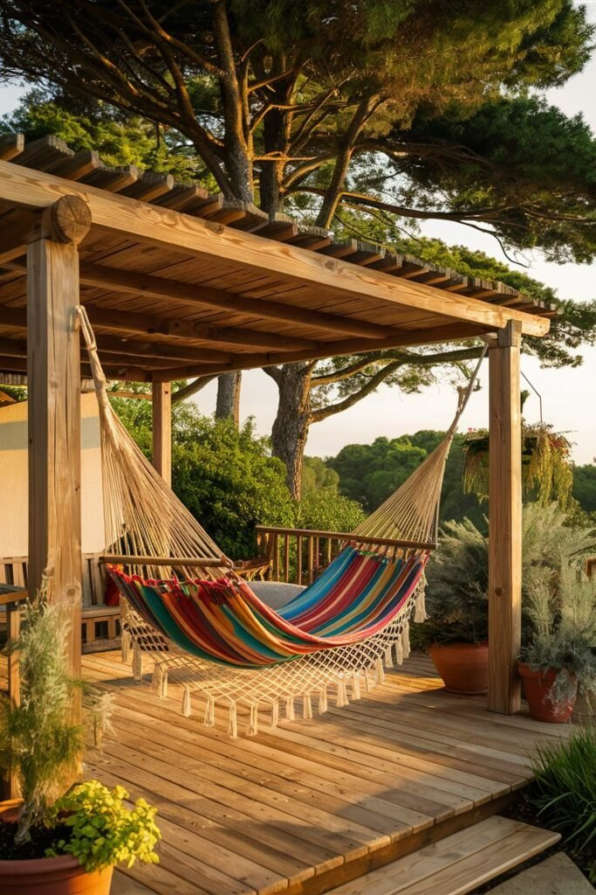
Go Mediterranean
Can't make it to Santorini this summer? Bring the Mediterranean to the backyard instead with whitewashed wood or textured stucco finishes.
Add bougainvillea, terracotta pots, and breezy linen drapes, then sprinkle in a few colorful tiles for genuine island flair. The effect ends up surprisingly convincing.
Columns wrapped in cascading magenta bougainvillea against white stucco, like the pergola shown here, makes a solid case for pretending you're somewhere on the Amalfi Coast, works every time.
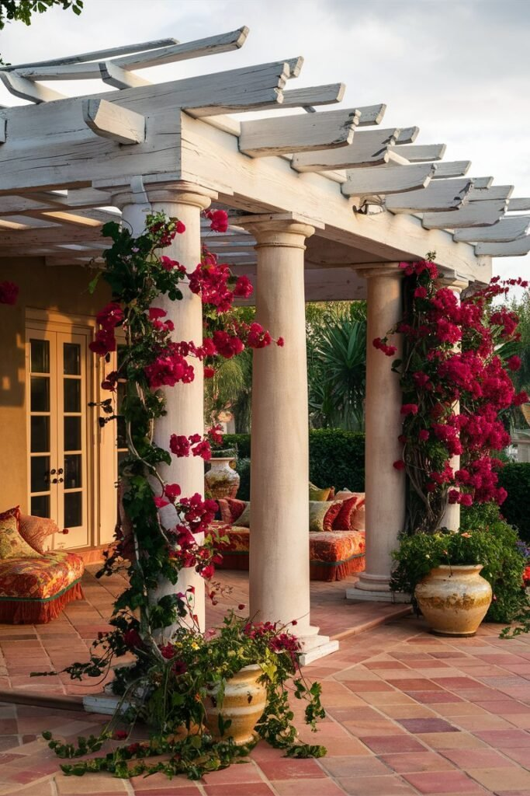
Pair It With a Water Feature
Ever wanted to feel like you're at a luxury spa without actually leaving home? Combine a pergola with a peaceful water feature and get most of the way there.
A tabletop fountain, a trickling wall-mounted stream, or even a small koi pond all work here, the sound genuinely helps mask traffic, chatty neighbors, or a dog that won't stop barking two yards over.
A dark wood pergola positioned beside a sheet of falling water, like the one shown here lit in golden evening light, creates the kind of calm that makes you forget you're technically still in your own backyard.
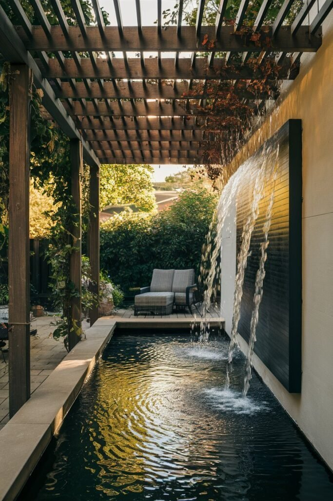
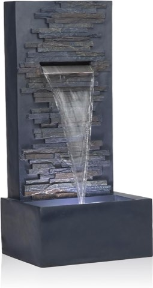
Alpine Corporation 32 Inch Cascading Stone Wall Fountain with LED Lights
Shop on AmazonString Up Lights for a Backyard Glow-Up
Want to make your space feel like a movie set? Add string lights. It's the single cheapest, fastest transformation on this entire list by far.
A rustic pergola with reclaimed wood and soft, twinkling bulbs draped across the beams turns a backyard into something that feels like an enchanted little getaway after dark.
Add a wooden bench or a vintage porch swing underneath, like the lantern-lit benches shown here, and the setup is basically begging for a quiet night in with wine and good company.
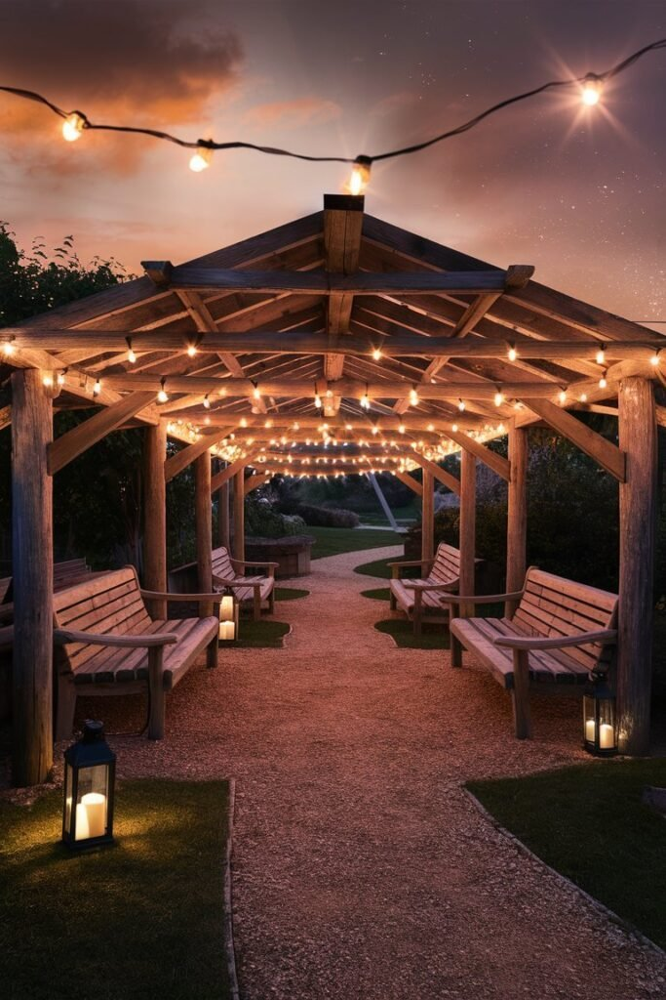
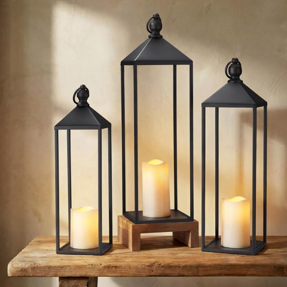
Perfnique Black Metal Decorative Lanterns, Set of 3, Indoor and Outdoor
Shop on AmazonInstall an Outdoor Kitchen Pergola
For anyone who genuinely loves hosting cookouts, or just likes the idea of hosting cookouts, an outdoor kitchen under a pergola is close to a no-brainer.
Cover the grill, prep station, and a mini bar with a solid pergola frame. Tile or brick protects the surfaces and adds style at the same time, and string lights or sconces mean you can still flip burgers after dark.
A full stone outdoor kitchen with a built-in grill hood and bar seating, like the setup shown here, turns weekend cooking into an actual event rather than a chore done at an awkward angle from the kitchen window.
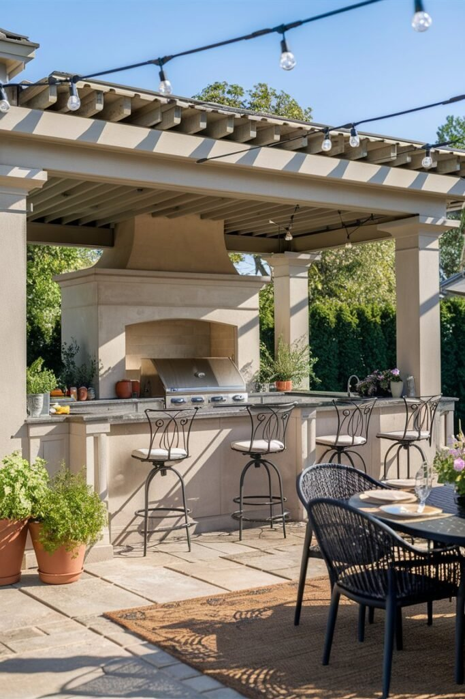
Try a Sleek Minimalist Pergola
If your taste leans toward less-is-more, a minimalist pergola with clean lines and a neutral palette is the move to make. Powder-coated aluminum or steel keeps it looking sharp without any maintenance drama.
The appeal here is straightforward: no clutter, a natural fit for modern homes, and a frame that won't rot, warp, or attract bugs the way wood eventually can over time.
A simple gray aluminum structure over a stone patio with a few sculptural succulents, like the one shown here, shows how much restraint can still read as genuinely considered design.
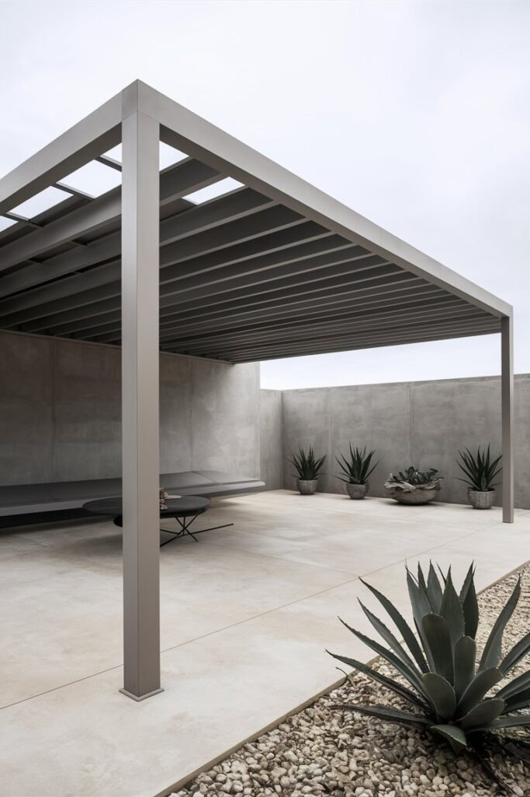
Hang a Swing Bed
This is the ultimate version of pergola luxury: not a bench, not a hammock, a whole bed that swings. Once you've tried it, everything else honestly feels like a downgrade.
Hang a mattress-sized platform from the pergola frame using sturdy ropes or chains, then layer it with outdoor cushions and throws, whatever makes it genuinely nap-worthy in the end.
A plush hanging daybed suspended beneath ornate columns and trailing vines, like the one shown here glowing under lantern light, is proof that a pergola can feel like a resort if you commit to it fully.
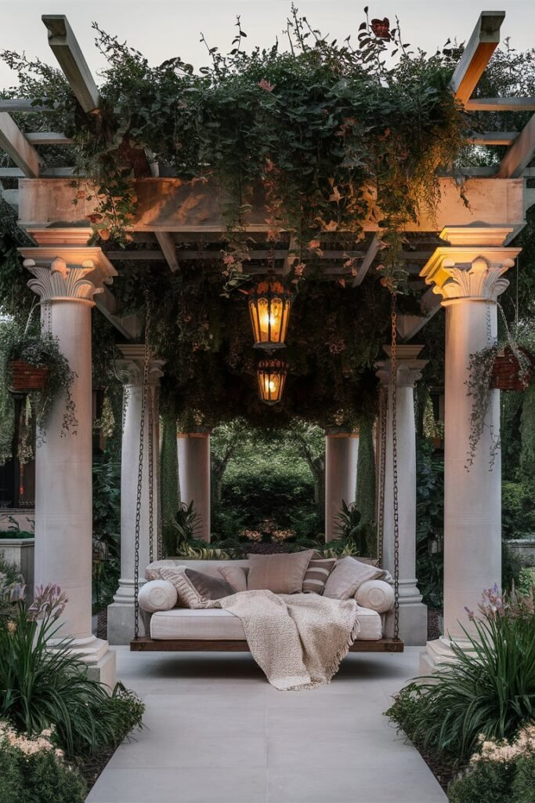
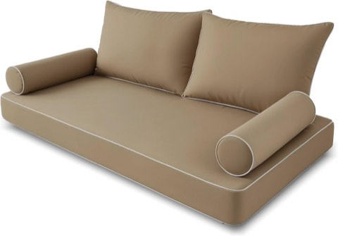
Outdoor Twin Size Patio Swing Bed Mattress and Pillow Covers with Zipper
Shop on AmazonGo With a Classic Wooden Pergola
There's a reason wooden pergolas never actually go out of style, they just work. Cedar and redwood are the top picks since both resist weather naturally, meaning less chance of the whole structure turning into a termite buffet.
Let climbing plants like wisteria or ivy take over the frame for a genuinely fairytale effect. It takes a season or two to fill in completely, but the payoff is worth the wait.
A wood structure nearly swallowed by draping wisteria and climbing roses, like the one shown here, is exactly the kind of result that gets neighbors seriously jealous.
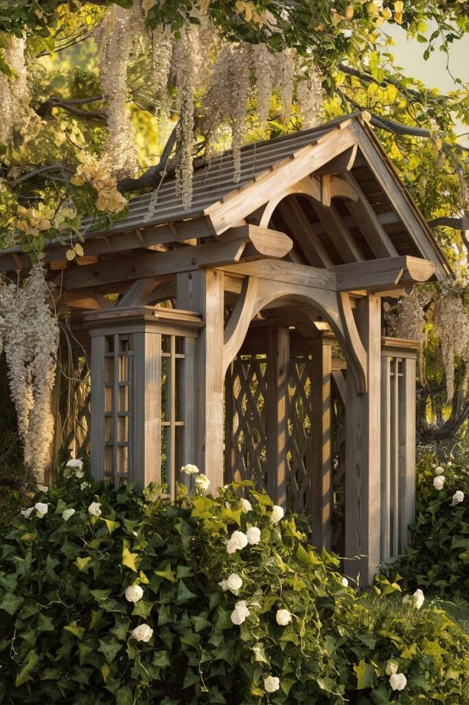
Set Up a Dining Pergola
Eating outside just hits differently, and nothing makes it feel more intentional than placing the dining table directly under a pergola.
A wooden table, comfortable chairs, and an overhead pendant light do most of the work here. Potted herbs around the perimeter double as a built-in spice rack, and a rug underneath helps define and cozy up the space.
A full table setting under a vine-covered pergola with a glowing chandelier overhead, like the one shown here, makes the case for al fresco dinners better than any amount of description could.
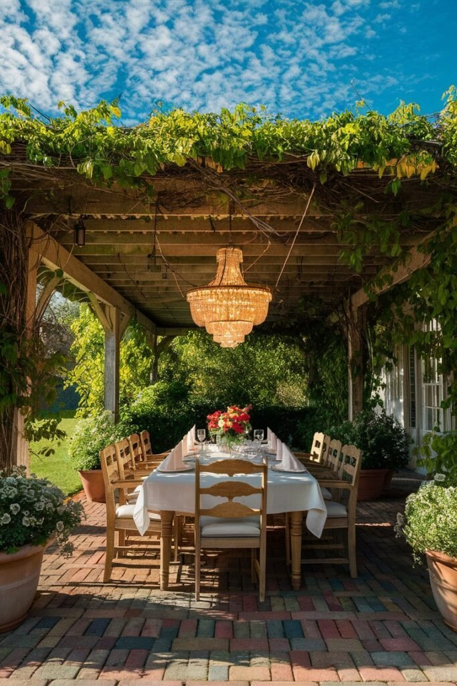
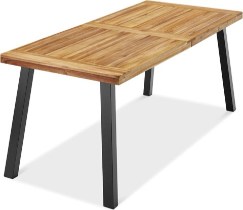
Best Choice Products 6-Person Acacia Wood Dining Table, Indoor and Outdoor
Shop on AmazonBuild a Fire Pit Pergola
Want your backyard to become the default hangout spot? Put a fire pit under a pergola and watch people show up who usually never do.
Pick your fire style, a gas-powered bowl, a built-in brick pit, or a classic wood-burning setup, then ring it with cushioned seating or floor poufs so people can actually gather around it comfortably.
A curved built-in bench wrapping a stone fire pit, like the one shown here strung with string lights, turns a simple backyard feature into the kind of spot nobody wants to leave once the sun goes down.
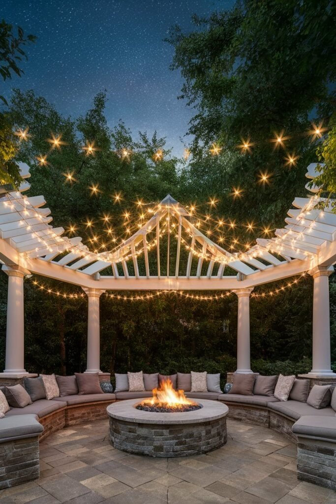
Final Thoughts
Fourteen pergola ideas, all genuinely stylish, functional, and doable without a full design team standing by. Whether the goal is a peaceful hideaway, a dinner-party setup, or a full backyard flex that makes the neighbors a little jealous, there's a version here worth building.
Match the materials to the climate, layer in real lighting, add plants, and let the small personal touches do the rest of the work. Whatever the vibe, a hammock nap, a wine night, a proper garden party, the right pergola makes the backyard the place to actually be.